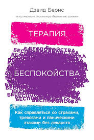
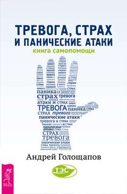

Вы всю жизнь считали себя лентяем, эгоистом, пессимистом или
истериком, обвиняя в своих неудачах отсутствие силы воли и желания
«быть нормальным»?
Все позади: бегство из оккупированной фашистами Эстонии в Германию,
поиски заработков по чужим городам, и собственные преступления... Все
осмыслено и решено - надо возвращаться. Но вернувшись, он не нашел ни
дома, ни родных. О тяжелом прошлом ему поведал друг отца, руководитель
банды националистов.

Вы переживаете, что излишне застенчивы или постоянно во всем
сомневаетесь? Вы не можете нормально спать, беспокоясь о своей работе,
здоровье или отношениях? Вас мучает страх высоты или начинается
паническая атака, когда садитесь за руль автомобиля?
Я знаю, как победить любой страх и снять стресс. Скажете, смелое
заявление? Я терапевт, специализирующийся на лечении тревожных
расстройств вот уже 20 лет. К тому же я никогда не была счастливым
обладателем спокойной нервной системы.

От страхов, беспокойства, неприятных воспоминаний, психологических
травм и душевных ран можно избавиться, если… быстро двигать глазами из
стороны в сторону или нажать на определенную точку на теле.
Невероятно? Между тем, сегодня доказано, что методы ТЭС и ДПДГ
действительно способны решать многие эмоциональные проблемы.
 Все книги
Все книги